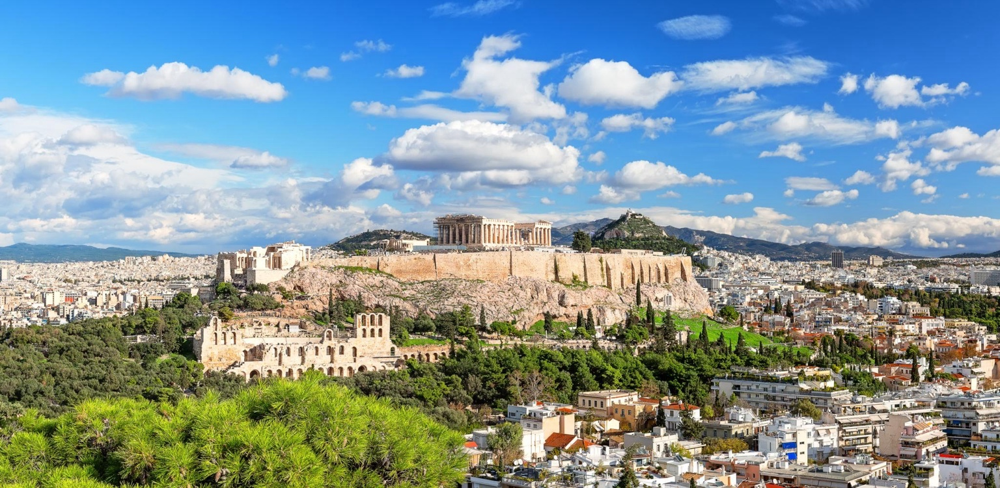
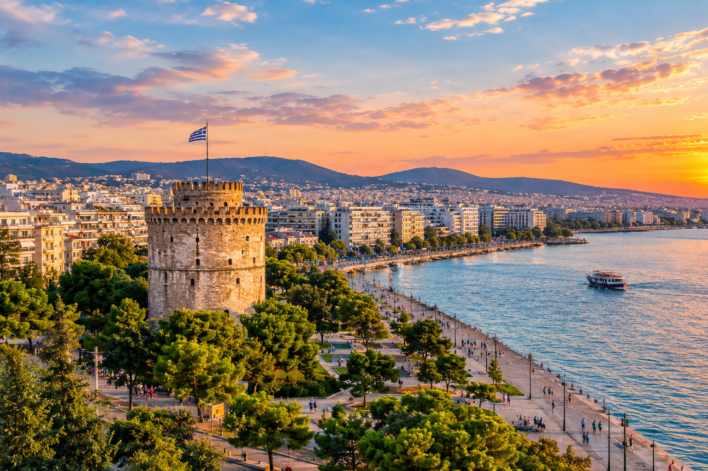
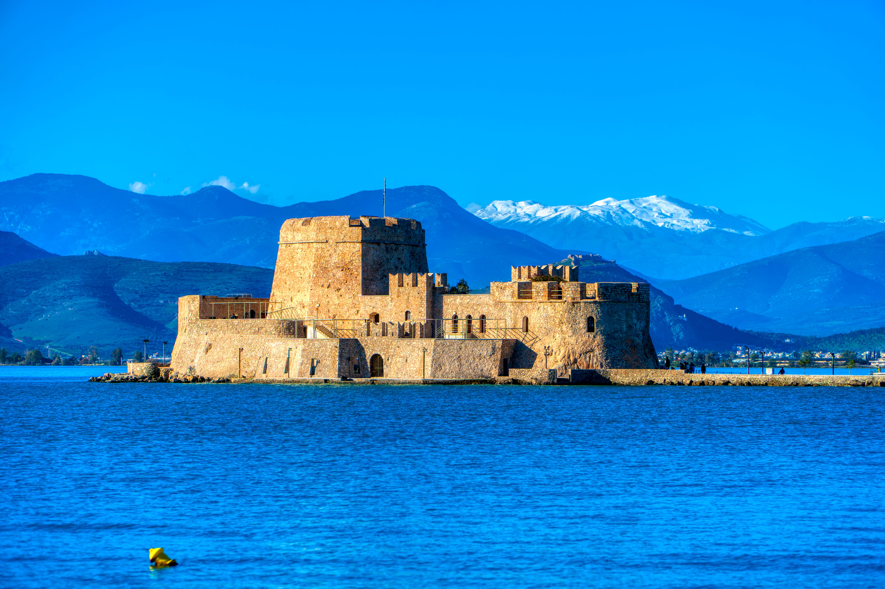
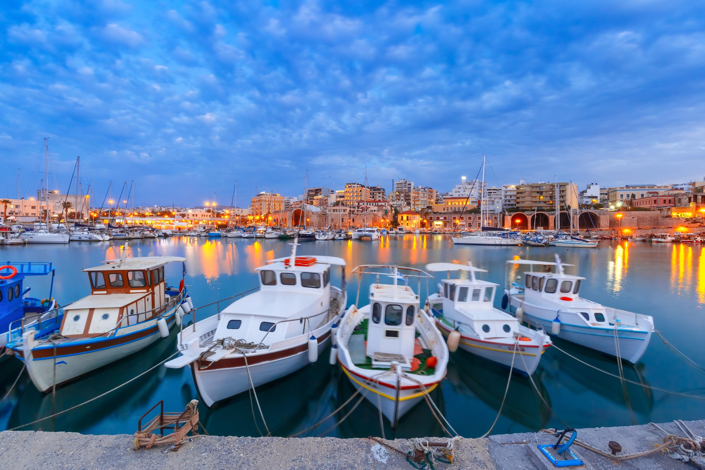
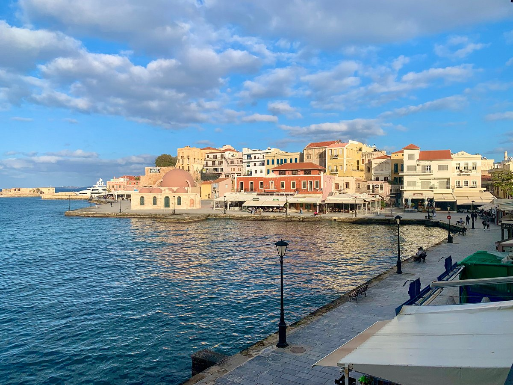
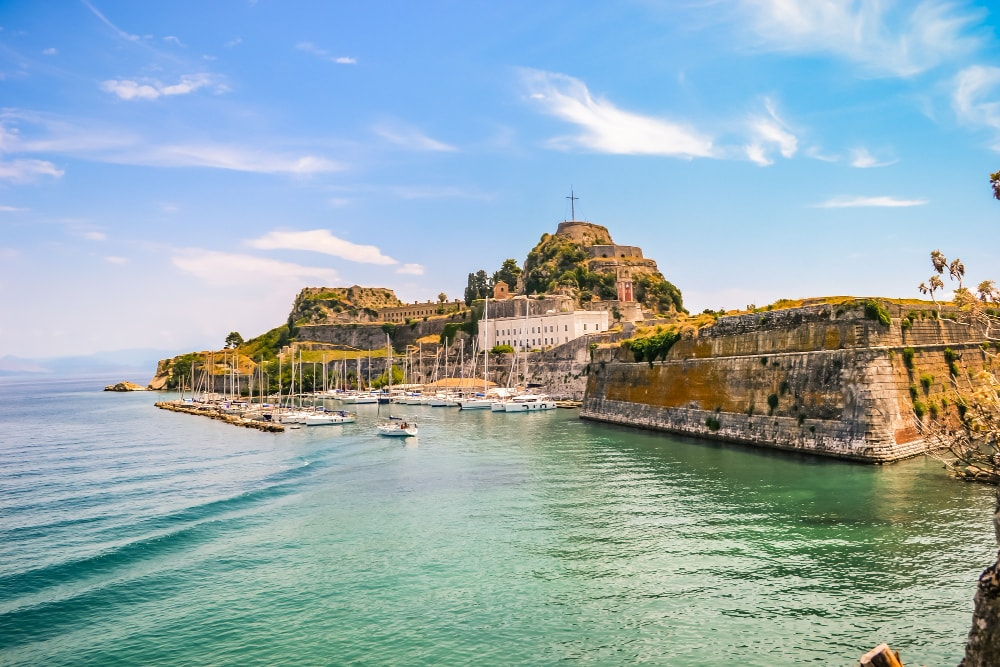

Historia y cultura de Grecia
Grecia es un lugar donde la historia y la cultura están presentes en todos lados. No solo se destaca por sus mitos y leyendas, sino también por su ubicación y su geografía, que tuvieron un papel muy importante en su desarrollo.
Su territorio, formado por montañas, islas y costas bañadas por el mar Egeo, hizo que Grecia estuviera siempre conectada con diferentes pueblos y culturas. Las ciudades-estado y las rutas marítimas convirtieron al país en un importante punto de encuentro entre Oriente y Occidente.
Entre sus barrios emblemáticos, Plaka destaca por sus calles pintorescas, Kolonaki por su elegancia y Monastiraki por su vibrante mercado. Además, Kifisia ofrece un ambiente más sofisticado, mientras que Gazi y Psiri son conocidos por su vida nocturna y el arte urbano.
Grecia, con sus barrios, es un puente entre la tradición y la modernidad.
Sus principales características
- Lengua y alfabeto comunes
- Avances en ciencia y matemáticas
- Organización en polis
- Religión politeísta
- Importancia del teatro
- Mitología importante
- Nacimiento de la democracia
- Desarrollo de la filosofía
- Creación de los Juegos Olímpicos
- Búsqueda de la belleza y el arte
Datos clave de Grecia
- Capital:
- Atenas
- Población:
- 10,4 millones de habitantes
- Idioma oficial:
- Griego
- Moneda:
- Euro
- Clima:
- Mediterráneo, con veranos cálidos y secos e inviernos suaves
Ciudades para visitar
Grecia tiene muchos lugares increibles para conocer, desde ciudades llenas de historia hasta rincones con hermosos paisajes. Algunas de las más conocidas son:
-

Atenas
Capital de Grecia y una de las ciudades más importantes del país. Se destaca por su historia, la Acrópolis y sus numerosos monumentos de la Antigua Grecia.
Costumbres: Valoran la hospitalidad, las sobremesas largas y el café en las cafeterias tradicionales. Las celebraciones de los santos son muy importantes. -

Tesalónica
Es una de las ciudades más importantes del norte de Grecia. Se caracteriza por su historia, sus monumentos y su ubicación junto al mar.
Costumbres: La vida social gira en torno al café, las celebraciones de los santos y las procesiones religiosas. -

Nafplio
Es una hermosa ciudad del Peloponeso que se caracteriza por sus calles antiguas, su arquitectura y sus fortalezas. Es un lugar ideal para recorrer y conocer una parte diferente de Grecia.
Costumbres: La Semana Santa es muy emotiva, con procesiones del Viernes Santo y el canto de los niños el Sábado de Lázaro. Además, el carnaval veneciano y los panigyria son muy populares. -

Heraclión
Es la capital de la isla de Creta y un importante centro cultural e histórico. Desde allí se puede visitar el Palacio de Cnosos, relacionado con la antigua civilización minoica.
Costumbres: Las sobremesas se alargan con raki y dulces. Las festividades, como la vendimia, reúnen a la comunidad. -

La Canea
Ciudad de Creta conocida por su antiguo puerto, sus calles tradicionales y su arquitectura influenciada por diferentes culturas. Es un lugar muy interesante para caminar y descubrir.
Costumbres: Las fiestas rurales se celebran con música, bailes y destilación de raki. Las mantidades son muy populares. -

Corfú
Ciudad principal de la isla de Corfú, ubicada en las Islas Jónicas. Se destaca por su arquitectura, sus playas y su historia.
Costumbres: Durante la Semana Santa, se lanzan jarrones de barro llenos de agua desde los balcones en el Sábado Santo, símbolizando la limpieza y la llegada de la primavera. Además, el carnaval tiene un aire veneciano, con desfiles y música.
Lugares turísticos
Entre sus principales atractivos se encuentran sus islas, playas, monumentos históricos y sitios arqueológicos. A continuación, se presentan algunos de los lugares más interesantes para visitar en Grecia.
Olimpia
Olimpia es un antiguo santuario de Grecia y es conocida como el lugar donde nacieron los Juegos Olímpicos. Allí se encuentran restos de templos, instalacion Se encuentra en el Peloponeso occidental, en un valle rodeado de naturaleza. Se puede recorrer el sitio arqueológico, conocer el antiguo estadio y visitar los museos de la zona, donde se conservan objetos y esculturas de la Antigua Grecia.
Santorini
Santorini es una de las islas griegas más conocidas. Está ubicada en el mar Egeo, en el extremo sur de las islas Cícladas. Se caracteriza por sus casas blancas, sus iglesias con cúpulas azules, sus acantilados y sus increíbles vistas sobre el mar Egeo.
La isla tiene además un origen volcánico que forma parte de su identidad. Se puede recorrer el pueblo de Oia, disfrutar de sus famosos atardeceres, conocer la caldera volcánica, visitar el sitio arqueológico de Akrotiri y realizar paseos en barco.
Creta
Creta es la isla más grande de Grecia y combina playas, montañas, pueblos tradicionales y una gran riqueza histórica. Es especialmente conocida por su relación con la antigua civilización minoica y por sus paisajes naturales.
Se pueden visitar lugares históricos como el Palacio de Cnosos, recorrer ciudades como La Canea y Retino, disfrutar de playas como Elafonisi y Balos y realizar caminatas por paisajes naturales como la Garganta de Samaria.
También se puede conocer la gastronomía y las tradiciones de los pueblos cretenses. Es un destino que permite combinar historia, naturaleza, playas y cultura.